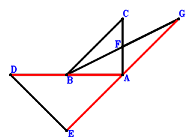
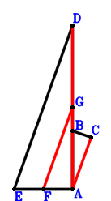

Exercise 497： Let F be the midpoint of CA and BG. BC⊥DE and DA⊥AC. Given that D, B, A are collinear and E, A, G are collinear, prove that BA\(\cdot\)DA=AG\(\cdot\)EA.

\(\because \) F is the midpoint of CA \(\therefore \small\overrightarrow{AF}=\dfrac{\small\overrightarrow{AC}}{2}\).\(\because \) F is the midpoint of BG \(\therefore \small\overrightarrow{AG}=- \small\overrightarrow{AB} + 2 \small\overrightarrow{AF}=- \small\overrightarrow{AB} + \small\overrightarrow{AC}\).\(\because \) DA⊥AC \(\therefore \small\overrightarrow{AC} \cdot \small\overrightarrow{AD}=0\) . . . . . . \(①\)\(\because \) BC⊥DE \(\therefore \small\overrightarrow{CB} \cdot \small\overrightarrow{ED}=\left(\small\overrightarrow{AB} - \small\overrightarrow{AC}\right) \cdot \left(\small\overrightarrow{AD} - \small\overrightarrow{AE}\right)=\small\overrightarrow{AB} \cdot \small\overrightarrow{AD} - \small\overrightarrow{AB} \cdot \small\overrightarrow{AE} - \small\overrightarrow{AC} \cdot \small\overrightarrow{AD} + \small\overrightarrow{AC} \cdot \small\overrightarrow{AE}=0\) . . . . . . \(②\)In conclusion, \(- \small\overrightarrow{AB} \cdot \small\overrightarrow{AD} - \small\overrightarrow{AE} \cdot \small\overrightarrow{AG}=- \small\overrightarrow{AB} \cdot \small\overrightarrow{AD} - \small\overrightarrow{AE} \cdot \left(- \small\overrightarrow{AB} + \small\overrightarrow{AC}\right)=- \small\overrightarrow{AB} \cdot \small\overrightarrow{AD} + \small\overrightarrow{AB} \cdot \small\overrightarrow{AE} - \small\overrightarrow{AC} \cdot \small\overrightarrow{AE}=-①-②=0\)\(\because\) D, B, A are collinear and E, A, G are collinear \(\therefore\) BA\(\cdot\)DA=AG\(\cdot\)EA.
Exercise 526： Let F, G be the midpoints of EA, DA, respectively. BC⊥ED and EA⊥AB. Given that D, B, A are collinear and AC//FG, prove that \(BA·DA=2·AC·FG\).

\(\because \) F is the midpoint of EA \(\therefore \small\overrightarrow{AF}=\dfrac{\small\overrightarrow{AE}}{2}\).\(\because \) G is the midpoint of DA \(\therefore \small\overrightarrow{AG}=\dfrac{\small\overrightarrow{AD}}{2}\).\(\because \) EA⊥AB \(\therefore \small\overrightarrow{AB} \cdot \small\overrightarrow{AE}=0\) . . . . . . \(①\)\(\because \) BC⊥ED \(\therefore \small\overrightarrow{CB} \cdot \small\overrightarrow{ED}=\left(\small\overrightarrow{AB} - \small\overrightarrow{AC}\right) \cdot \left(\small\overrightarrow{AD} - \small\overrightarrow{AE}\right)=\small\overrightarrow{AB} \cdot \small\overrightarrow{AD} - \small\overrightarrow{AB} \cdot \small\overrightarrow{AE} - \small\overrightarrow{AC} \cdot \small\overrightarrow{AD} + \small\overrightarrow{AC} \cdot \small\overrightarrow{AE}=0\) . . . . . . \(②\)In conclusion, \(- \small\overrightarrow{AB} \cdot \small\overrightarrow{AD} + 2 \small\overrightarrow{AC} \cdot \small\overrightarrow{FG}=- \small\overrightarrow{AB} \cdot \small\overrightarrow{AD} + 2 \small\overrightarrow{AC} \cdot \left(- \small\overrightarrow{AF} + \small\overrightarrow{AG}\right)=- \small\overrightarrow{AB} \cdot \small\overrightarrow{AD} + 2 \small\overrightarrow{AC} \cdot \left(\dfrac{\small\overrightarrow{AD}}{2} - \dfrac{\small\overrightarrow{AE}}{2}\right)=- \small\overrightarrow{AB} \cdot \small\overrightarrow{AD} + \small\overrightarrow{AC} \cdot \small\overrightarrow{AD} - \small\overrightarrow{AC} \cdot \small\overrightarrow{AE}=-①-②=0\)\(\because\) D, B, A are collinear and AC//FG \(\therefore\) \(BA·DA=2·AC·FG\).
Exercise 531： Let DEAF be a parallelogram. DCBF is a cyclic quadrilateral, DC intersects BF at A. EA⊥AC. Prove that CB⊥ED.